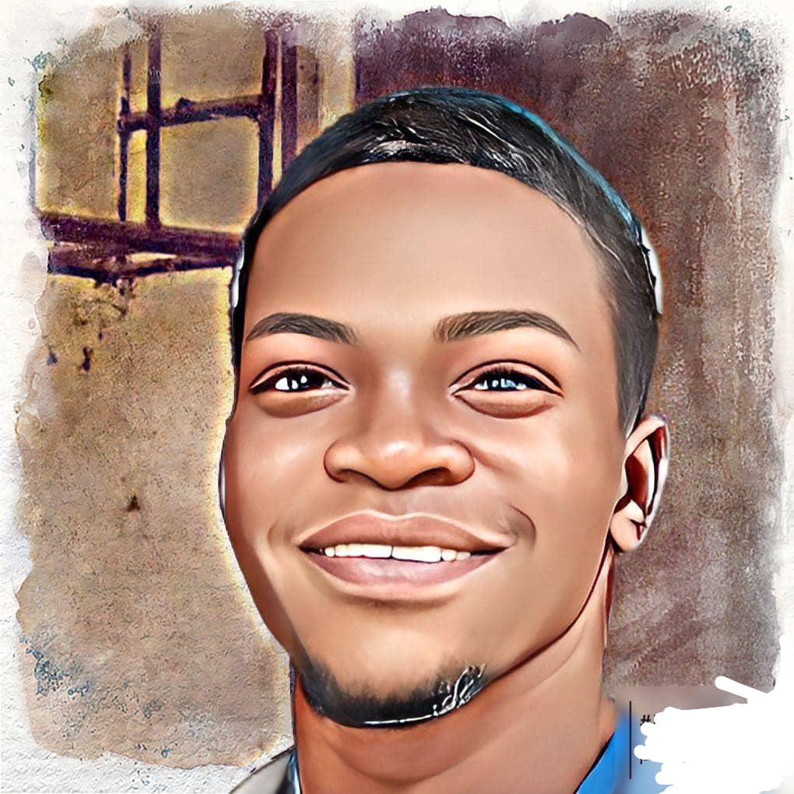
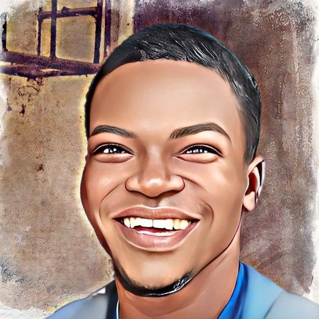

My name is Ali
I am a Data Scientist/Analyst. I am a final year student of (Mathematical) Statistics at Obafemi Awolowo University,
Ile-Ife, Nigeria.
I have been writing code and analyzing data daily for more than 2 years.
I am looking for new opportunities to implement and increase my skills in data science/analytics and web development.

More About Me
New challenges don't bother me, but rather inspire, as they give me the opportunity to grow up and develop,
and the habit of not give up helps me in this.
Creating and building projects that solve or fix a problem is a high priority for me. I love to beat data until it speaks.
I love reading books and learning new stuff.

Intro To What I Can Do
I specialize in Data Science and Analytics.
I am very knowledgeable in machine learning, statistical inference, web scraping and
technical analysis. I'm very familiar with the following tools:
Python, R, Tableau, Excel, SQL, HTML, CSS, Bootstrap, Git.
MORE